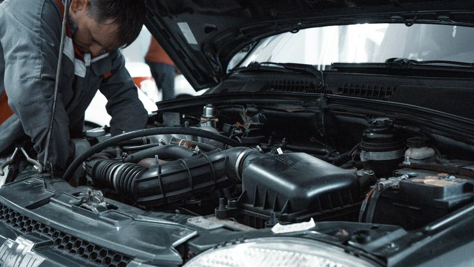
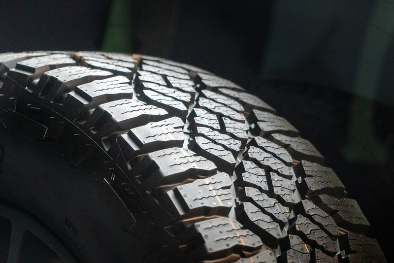
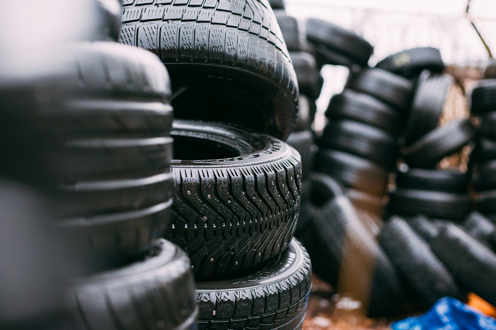

Pneuservis
- Přezutí letních a zimních pneumatik
- Vyvážení kol
- Oprava defektu
- Nové pneumatiky na objednávku
Autoservis a pneuservis na Těšínské v Horním Těrlicku, pro řidiče z Havířova i Českého Těšína. Zakládáme si na rychlém jednání a férových cenách.
Po–Čt 9–17, Pá 9–16, So 9–12
Zimní období 1. 11. – 31. 3.Od 1. 11. do 31. 3. musíte mít zimní pneumatiky, když je na silnici sníh, led nebo námraza.
Servis auta i pneumatik na jednom místě, takže přezutí a výměnu oleje vyřídíte jednou návštěvou.

Nevidíte tu, co potřebujete? Zavolejte na 774 900 479, domluvíme se.
Změřte hloubku v hlavní drážce pneumatiky a nastavte ji jezdcem. Hned uvidíte, jestli pneu vyhovuje zákonu v létě i v zimě.

Zavolejte, nebo nám pošlete objednávku přes web. V sobotu máme otevřeno do 12:00.
774 900 479